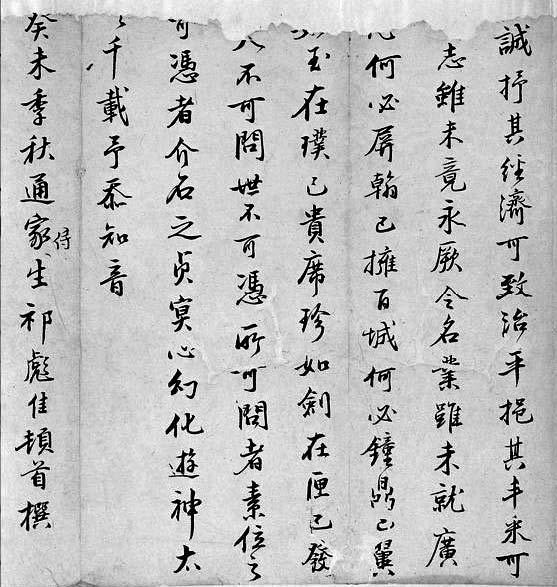

遗民·苦闷
明遗民现象所包含的主题，不是表面看上去的对明王朝之忠，甚至也不仅仅是反清那样狭隘。这是对中国自身历史与文化大变革、大觉醒在即，却突然陷于绝境而生出的大悲凉、大不甘。假如把“攘夷狄救中国”，换写成“攘蒙昧救文明”，我们对吕留良夷夏之防理论的内涵，便不存误解。

祁彪佳遗墨
祁彪佳出身仕宦，其父祁承爜乃藏书大家，祁氏“澹生堂”藏书冠诸一方。祁彪佳为刘宗周弟子，南都立，史可法派之往苏松处理民乱，后因阮大铖欲加害，辞归。清兵下杭州，先于乃师自绝。